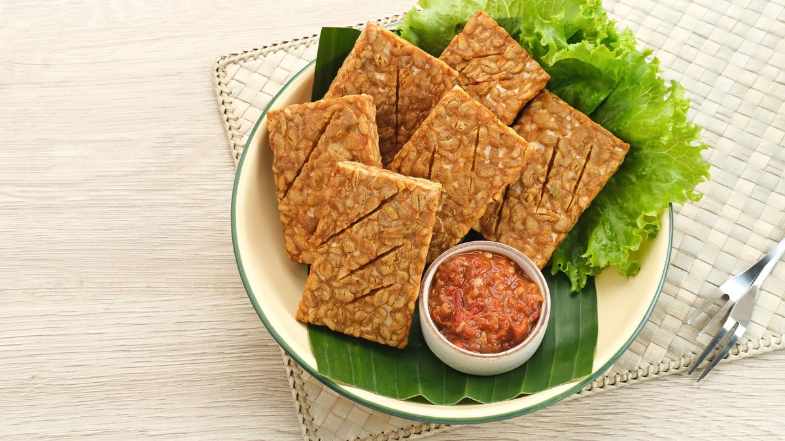

The star ingredient in this traditional dish is tempeh—a natural, soy-based product that is usually sold in blocks. It originates from Indonesia where it is used in a variety of ways. In this simple dish, thick slices of tempeh are first marinated in different combinations of liquid and spices and are then merely pan or deep-fried in oil until they become crispy. Tempe goreng is usually served as a snack with sambal on the side, but it also makes a great accompaniment to other dishes.
Meal prep time : 35 minutes
Servings : 4